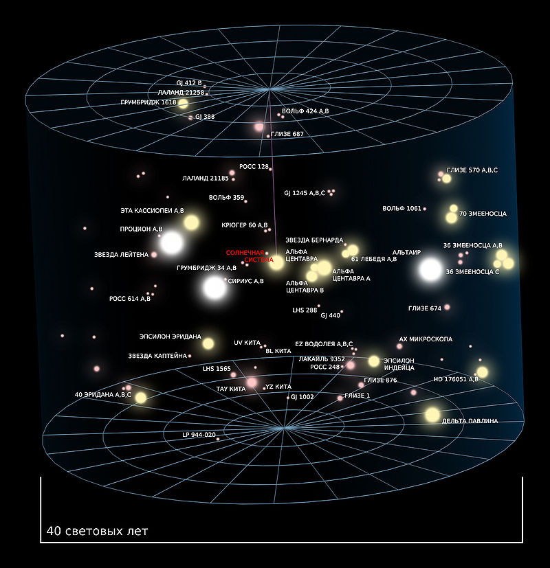

|
|
|
|

Непосредственная галактическая окрестность Солнечной системы известна как Местное межзвёздное облако. Это более плотный участок области разреженного газа Местный пузырь — полости в межзвёздной среде протяжённостью примерно 300 св. лет, имеющей форму песочных часов. Пузырь заполнен высокотемпературной плазмой; это даёт основания думать, что пузырь образовался в результате взрывов нескольких недавних сверхновых.
В пределах десяти св. лет (95 трлн км) от Солнца звёзд относительно немного.
Ближайшей к Солнцу является тройная звёздная система Альфа Центавра, на расстоянии примерно 4,3 св. года. Альфа Центавра A и B — тесная двойная система, компоненты которой близки по характеристикам к Солнцу. Маленький красный карлик Альфа Центавра C (также известный как Проксима Центавра) обращается вокруг них на расстоянии 0,2 св. года, и в настоящее время находится несколько ближе к нам, чем пара A и B. У Проксимы есть экзопланета: Проксима Центавра b.
Следующими ближайшими звёздами являются красные карлики звезда Барнарда (5,9 св. года), Вольф 359 (7,8 св. года) и Лаланд 21185 (8,3 св. года). Крупнейшая звезда в пределах десяти световых лет — Сириус (8,6 св. года), яркая звезда главной последовательности с массой примерно в две массы Солнца и компаньоном, белым карликом под названием Сириус B. Оставшиеся системы в пределах десяти световых лет — двойная система красных карликов Лейтен 726-8 (8,7 св. года) и одиночный красный карлик Росс 154 (9,7 св. года). Ближайшая система коричневых карликов — Луман 16, находится на расстоянии 6,59 светового года.
Ближайшая одиночная подобная Солнцу звезда — Тау Кита, находится на расстоянии 11,9 св. года. Масса её составляет примерно 80% массы Солнца, а светимость — только 60% солнечной.
Страница в Википедии